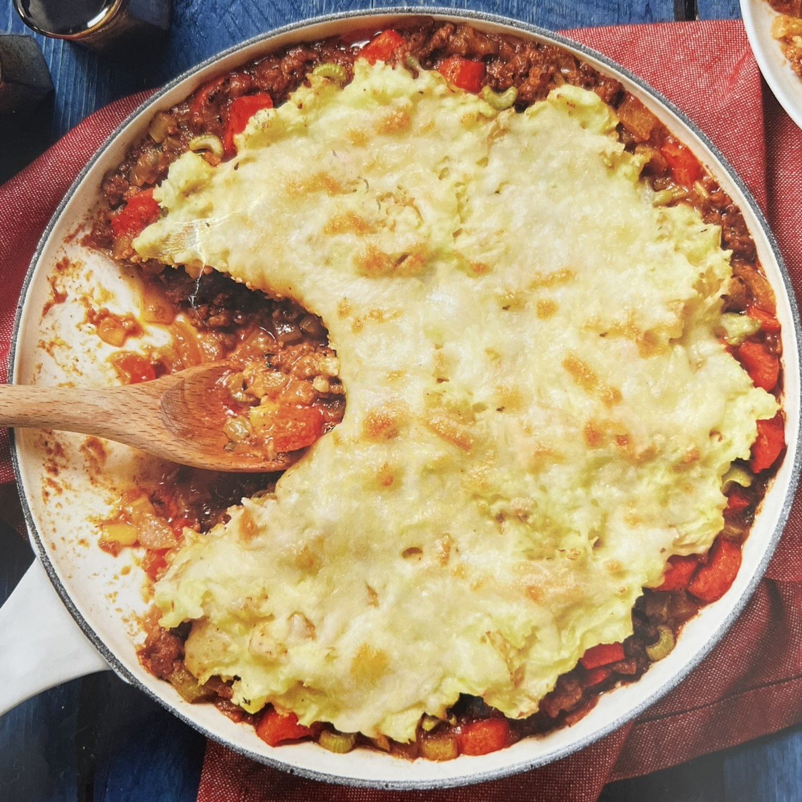

Recipe

Ingredients
- 1 lb yukon gold potatoes
- 2 large carrots
- 2 stalks celery
- 1 yellow onion
- 2 Tbsp butter
- 1 Tbsp flour
- 1 tsp thyme
- 2 tsp garlic powder
- 2 Tbsp sour cream
- 1.5 oz tomato paste
- 10 oz ground beef
- 2 beef bullion cubes, dissolved in 3/4 cup hot water
- 1/2 cup grated or shredded white cheddar cheese
- Salt and pepper to taste
Instructions
- Heat broiler to high.
- Dice potatoes into 1/2-inch pieces. Trim, peel and halve carrots lenthwise, then slice into 1/4 inch slices. Finely dice celery. Peel and finely chop onion.
- Place potatoes in a medium pot with enough water to cover by 2 inches. Bring to a boil and cook until tender, 15-20 minutes. Drain and return potatoes to pot.
- Mash potatoes with sour cream, butter and 1/2 tsp thyme until smooth, adding splashes of water as needed. Season with salt and pepper.
- While potatoes cook, heat a drizzle of oil in a medium over-proof pan (large if making double serving) over medium-high heat. Add carrot, season with salt and pepper and cook 2-3 minutes.
- Add celery, onion, and a large drizzle of oil to pan with carrots, season with salt and pepper. Cook, stirring, until veggies are tender, 5-7 minutes.
- Stir in garlic powder and 1/2 tsp thyme and cook until fragrant, about 30 seconds.
- Add beef to pan with veggies and season with salt and pepper. Cook, breaking up meat into pieces, until browned and cooked through, about 4-6 minutes.
- Add tomato paste and flour and cook, stirring, until thoroughly combined, 1 minute.
- Gradually pour in bullion-water mixture and bring to a boil. Cook until mixture is very thick, 1-2 minutes. Turn off heat.
- Top beef filling with an even layer of mashed potatoes, leaving a gap around the edge of the pan. Sprinkle evenly with cheddar.
- Broil until browned, 3-4 minutes. Serve directly from pan.